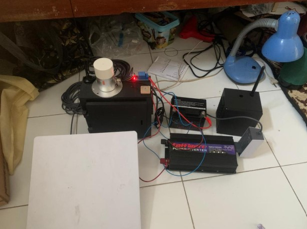
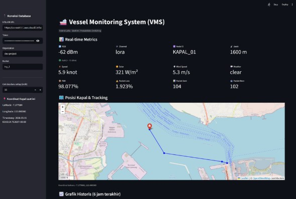
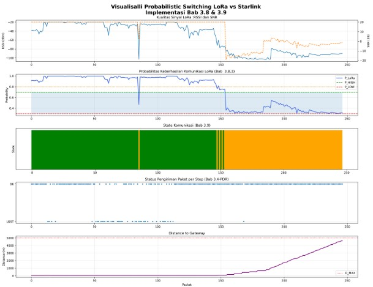

03 — PROJECTS
Tugas Akhir
FINAL PROJECT
Probabilistic Switching LoRa vs Satelit
Merancang dan mengimplementasikan sistem komunikasi maritim berbasis ESP32, LoRa, GPS dan Starlink.
Mengembangkan logika probabilistic switching untuk menentukan penggunaan komunikasi LoRa atau satelit berdasarkan kondisi komunikasi.



KRI / KRSTI
Robot ARTSHIP
Berperan sebagai programmer dan membantu pemrograman motion/pergerakan kaki robot.
🏆 Juara Harapan KRSTI ARTSHIP Kontes Robot Indonesia Wilayah II 2023